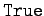
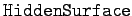
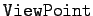
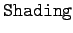
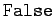
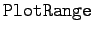
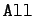

Inhalt Index DeskTop Bronstein

 Computeralgebrasysteme Graphik in Computeralgebrasystemen Graphik mit Mathematica Darstellung von Flächen und Raumkurven
Computeralgebrasysteme Graphik in Computeralgebrasystemen Graphik mit Mathematica Darstellung von Flächen und Raumkurven


Die Zahl der Optionen für 3D-Graphik ist groß. In der folgenden Tabelle werden einige in aufgelistet, wobei Optionen, die aus der 2D-Graphik bekannt sind, nicht aufgeführt werden. Sie lassen sich sinngemäß übertragen.
| voreingestellt ist , dies zeichnet einen dreidimensionalen Rahmen um die Fläche | |
|  | bestimmt die Undurchsichtigkeit der Oberfläche, voreingestellt ist |
|  | bestimmt den Punkt (x,y,z) im Raum, von dem aus die Oberfläche betrachtet wird. Voreingestellt ist {1.3,-2.4,2} |
|  | voreingestellt ist , damit wird die Oberfläche schattiert,  liefert weiße Oberflächen |
|  | ist hier für die Werte , {za,ze}, {{xa,xe},{ya,ye},{za,ze}} wählbar. Voreinstellung ist |
Hier sei besonders auf die Option hingewiesen, mit der sehr unterschiedliche Ansichtsperspektiven für die jeweilige Oberfläche ausgewählt werden können.